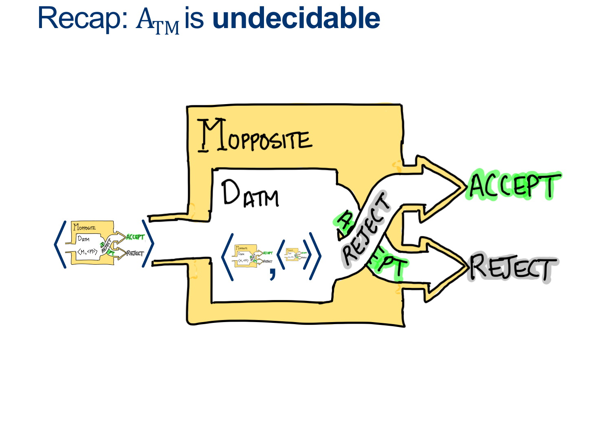

Lecture Notes 24: Reductions and Ennumeration
Outline
This class we'll discuss:
ATM is UNdecidable
We proved this by Contradiction.
We assumed ATM was decidable and built a helper machine to arrive at a contradiction:
Consider the Machine \(M_{OPPOSITE} ( < M> )\)
\[
\begin{align*}
&M_{OPPOSITE}:\\
& \text{ On input $ < M > $ }:\\
& \text{ Simulate $D_{ATM} \; on \; < M , < M > > $}\\
& \text{ If $D_{ATM}$ accepts, REJECT. }\\
& \text{ If $D_{ATM}$ rejects, ACCEPT. }\\
\end{align*}
\]
Now, what happens when we run \(M_{OPPOSITE} ( < M_{OPPOSITE}> )\) ?

Reducing ATM to HALT
Assume HALT is decidable, and so there exists some \(D_{HALT}\) that decides, for any input \(< M,w>\), whether \(M\) halts on \(w\).
We'll design the Machine \(D_{ATM} \) as follows:
\[
\begin{align*}
&D_{ATM}:\\
& \text{ On input $ < M, w > $ }:\\
& \text{ Simulate $D_{HALT} \; on \; < M, w > $}\\
& \text{ If $D_{HALT}$ rejects, $M$ doesn't halt, so it did not accept: REJECT. }\\
& \text{ If $D_{HALT}$ accepts, we know $M$ won't loop forever, so }\\
& \quad \text{ Simulate $M$ on $w$ ADWID }\\
\end{align*}
\]
Reducing ATM to ATM-01


In terms of how to write this reduction properly:
Assume ATM-01 is decidable, and so there exists some \(D_{ATM-01}\) that decides, for any input \(< M>\), whether \(M\) Accepts \(01\).
We'll design the Machine \(D_{ATM} \) as follows:
\[
\begin{align*}
&D_{ATM}:\\
& \text{ On input $ < M, w > $ }:\\
& \text{ Create (but don't run) $HELPER_{M,w}$ such that}\\
& \quad \text{ On input $ < X > $ }:\\
& \quad \quad \text{ Ignore $ < X > $ }\\
& \quad \quad \text{ Run $M$ on $w$ ADWID}\\
& \text{ Now Run $D_{ATM-01}$ on $HELPER_{M,w}$}\\
& \text{ If $D_{ATM-01}$ accepts, it is only because M accepts w so our machine ACCEPTS}\\
& \text{ If $D_{ATM-01}$ rejects, , it is only because M rejects w so our machine REJECTS}\\
\end{align*}
\]
And the MOST IMPORTANT PART:
Because this is a VALID construction of \(D_{ATM}\) with the sole assuption that \(D_{ATM-01}\) Exists... this means that because we KNOW that \(D_{ATM}\) doesn't exist, \(D_{ATM-01}\) MUST ALSO NOT EXIST.


 This can be written like this:
This can be written like this:
Assume EMPTY-TM is decidable, and so there exists some \(D_{EMPTY-TM}\) that decides, for any input \(< M >\), whether \(L (M) \) is empty.
We'll design the Machine \(D_{ATM} \) as follows:
\[
\begin{align*}
&D_{ATM}:\\
& \text{ On input $ < M, w > $ }:\\
& \text{ Create (but don't run) $HELPER_{M,w}$ such that}\\
& \quad \text{ On input $ < X > $ }:\\
& \quad \quad \text{ Ignore $ < X > $ }\\
& \quad \quad \text{ Run $M$ on $w$ ADWID}\\
& \text{ Now Run $D_{EMPTY-TM}$ on $HELPER_{M,w}$}\\
& \text{ If $D_{EMPTY-TM}$ rejects, invert the result and our machine ACCEPTS}\\
& \text{ If $D_{EMPTY-TM}$ accepts, invert the result and our machine REJECTS}\\
\end{align*}
\]
As we saw above, the ONLY way \(D_{EMPTY-TM}\) Rejects is if \(HELPER_{M,W}\) Accepts, which happens ONLY when \(M\) accepts \(w\).
This means we CAN make \(D_{ATM}\) as long as \(D_{EMPTY-TM}\) exists.
However, \(D_{ATM}\) doesn't exist...which means \(D_{EMPTY-TM}\) CANNOT EXIST EITHER.
 Is there a simple way we could prove \(\overline{EMPTY-TM}\) is NOT Decidable?
Is there a simple way we could prove \(\overline{EMPTY-TM}\) is NOT Decidable?
Activity 1 [2 minutes] How would you prove this?:
\(\overline{EMPTY-TM}\) is ALSO Not Decidable?
(Wait; then Click)
Use Contradiction and Closure!
What would happen if we assume that \(\overline{EMPTY-TM}\) is Decidable?
It turns out that Turing-Decidable languages are closed under Complement...so...
\(EMPTY-TM\) would be decidable too... But we just proved it is NOT, so \(\overline{EMPTY-TM}\) cannot be decidable.
Is there a simple way we could prove \(\overline{EMPTY-TM}\) is Recognizable?
Activity 2 [2 minutes] How would you show it is Recognizable?:
(Wait; then Click)

Is there a way to deal with this?
(Wait; then Click)

This will lead us to a new way of looking at Recognizers: Enumeration.
Enumeration


Activity 3 [2 minutes] In groups, come up with an algorithm to enumerate \(\Sigma^*\)?:


Activity 4 [2 minutes] In groups,
How would you prove that, IF you can enumerate a Language, then that language is Recognizable.
(Wait; then Click)
Assume L is enumerable, i.e. there exists some machine E_L that can print out all of Ls words.
Build a machine R_L that uses E_L to print them out one at a time, and compares each one with the input.
As soon as they match, accept.
This machine accepts only words that are in L, and if a word is in L we’re guaranteed to reach it at some point (though it might take awhile).
Thus, it recognizes L. QED.

Homework
[Due for everyone]
Get together to study Reductions!!
You need to be able to master reducing the examples we've seen so far.
[Optional]
TODO